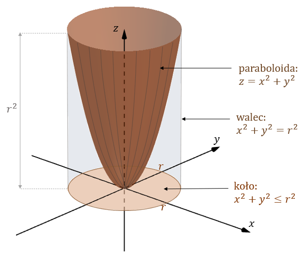

Oblicz objętość bryły ograniczonej ograniczonej paraboloidą \(z = x^2 + y^2\),
płaszczyzną \(z = 0\) i walcem \(x^2+y^2=r^2\).
Jeżeli płaszczyznę \(z = 0\)
ograniczymy walcem \(x^2+y^2=r^2\), to otrzymamy koło o równaniu: \(x^2+y^2\le r^2\): Zatem
obszar ograniczony danymi płaszczyznami, możemy zapisać tak: \[V=\{(x,y,z)\in \mathbb{R}^3:
z\ge0,\ z\le x^2+y^2,\ x^2+y^2\le r^2 \}\]  Aby wyznaczyć objętość szukanej bryły, należy scałkować obszar \(V\) po
wszystkich trzech zmiennych: \[\iiint\limits_V dx\,dy\,dz\] Możemy łatwo przejść na całkę
podwójną, wprowadzamy obszar całkowania na płaszczyźnie \(XY\): \[D=\{(x,y)\in \mathbb{R}^2:
x^2+y^2\le r^2\}\] (obszar \(D\), to oczywiście nasze koło, powstałe z ograniczenia płaszczyzny
\(z=0\) walcem \(x^2+y^2=r^2\)).
Teraz możemy zapisać: \[ \begin{split} &\iiint\limits_V
dx\,dy\,dz=\\[6pt] =&\iint\limits_D \left(\int\limits_{0}^{x^2+y^2}dz \right) dx\,dy=\\[6pt]
=&\iint\limits_D \left(z \vert_0^{x^2+y^2}\right) dx\,dy=\\[6pt] =&\iint\limits_D (x^2+y^2 - 0)\
dx\,dy=\\[6pt] =&\iint\limits_D (x^2+y^2)\ dx\,dy \end{split} \]
Powyższe
rachunki zapisałem po to, aby dokładnie pokazać skąd wzięła się całka \(\iint\limits_D
(x^2+y^2)\ dx\,dy\). Przy odrobinie wprawy można byłoby zacząć rozwiązanie zadania od razu
od zapisania tej całki.
W celu policzenia tej całki warto wykonać zamianę zmiennych
na współrzędne biegunowe: \[\begin{cases} x=R\cos \varphi \\ y=R\sin \varphi \end{cases} \]
gdzie \(R\in \langle0,r \rangle\) oraz \(\varphi\in \langle 0,2\pi \rangle\). Jakobian
(wyznacznik macierzy, zbudowanej z pierwszych pochodnych cząstkowych), tego podstawienia to:
\[J=\begin{vmatrix} \cos\varphi & -R\sin\varphi \\ \sin\varphi & R\cos\varphi \end{vmatrix}=R \]
Możemy teraz zdefiniować nowy obszar całkowania dla współrzędnych biegunowych:
\[\Delta=\{(R,\varphi)\in \mathbb{R}^2: 0\le R\le r,\ 0\le \varphi\le 2\pi \}\] i dalej na nim
liczyć całkę: \[ \begin{split} &\iint\limits_D (x^2+y^2)dx\,dy=\\[6pt] =&\iint\limits_\Delta
(R^2\cos^2\varphi +R^2\sin^2\varphi)\cdot RdR\,d\varphi =\\[6pt] =&\iint\limits_\Delta
(R^2(\cos^2\varphi +\sin^2\varphi))\cdot RdR\,d\varphi =\\[6pt] =&\iint\limits_\Delta (R^2)\cdot
RdR\,d\varphi =\\[6pt] =&\iint\limits_\Delta R^3 dR\,d\varphi =\\[6pt]
=&\int\limits_{0}^{2\pi}\left(\int\limits_{0}^{2}R^3 dR \right)d\varphi= \\[6pt]
=&\int\limits_{0}^{2\pi}\left.\left( \frac{R^4}{4}\right)\right\vert_0^r d\varphi= \\[6pt]
=&\int\limits_{0}^{2\pi} \frac{r^4}{4} d\varphi= \\[6pt]
=&\left.\frac{r^4}{4}\varphi\right\vert_0^{2\pi}= \frac{r^4}{4}\cdot 2\pi-0 = \frac{\pi r^4}{2}
\end{split} \] Zatem szukana objętość bryły wynosi \(\frac{\pi r^4}{2}\).